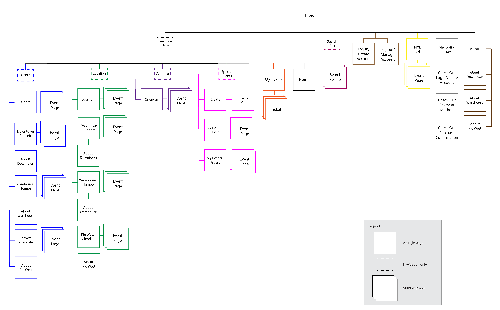

The Client:
First and Central - a fictitious music entertainment company
The Ask:
Design an app for all three of the venue's locations, including:
- A splash/landing page.
- A way for a user to sign up for an account outside of the checkout process.
- A way for a user to sign in and sign out of their account.
- An account page that shows user information, and a list of the tickets they've purchased.
- A contact page with a form that includes at least name, number, and email.
- An About page.
- Central navigation.
- A checkout process that accepts credit cards, Paypal, and Apple Pay or Google Pay.
- Event pages and a method of navigating through the event pages. First and Main didn't want clients to rely on Search, they wanted to make sure users saw lots of events before finding the event they were looking for.
The Venues:
- First and Central- Located in downtown Phoenix. 1100-person capacity. Serves alcohol most nights - has some 13 and up shows and some 18 and up shows. Most common genres: Rock, punk, pop, and rap. Operates 7 days a week; a band is booked 95% of the nights, some nights with more than one band.
- The Warehouse - Located near Mill Ave in Tempe, within walking distance of ASU. 500-person capacity. All shows are 18 and up and serves alcohol. Most common genres: Punk, Rock, Rap, Pop, Experimental Music and Pop Punk. Tuesdays are local band nights where local non-cover bands can get on the stage. Operates 7 days a week; a band is booked 85% of the nights, some nights with more than one band.
- Rio West - Located near the Westgate area in Glendale, pretty close to the Cardinals stadium. 200-person capacity. All shows are 18 and up and serves alcohol. The Valley's place for cover bands, Rio West brings in cover bands from all genres but the most common are classic rock and heavy metal. Operates 5 days a week (Wed-Sun); a band is booked 50% of nights, one band per night.
Important features/asks:
- The website should allow a user to narrow down by genre when searching for tickets.
- The website should have a calendar page that shows all events and allows the user to pick a day and see just the events on that day, or select a single event from that calendar page and go to the event page to purchase tickets. Should also be able to see the calendar for all 3 venues at the same time, and a way to filter down to a single venue.
- New Year's Eve is a big deal at all three locations so the owner would like a big graphic on the home page advertising the New Year's Eve parties (which can probably repurpose for when bigger bands are playing).
- The owner said: "I would like the ability for a customer to rent the facility for an event. It isn't as important as the events that I book, but if someone wants to get married at First and Central, or throw a giant bash at Rio West, I'll take their money and crank up the speakers for them. I think we will need to just talk to them in person about their event. So maybe make sure the date they want is open, and if it is, collect their name, email, and phone number, and what kind of event it is. If the date isn't open, ask if they are flexible and get a date range along with their contact info for me."
- There is free parking within walking distance at all three venues. It would be cool if the app had a page that showed parking for each location.
Event Page Requirements:
- Event Description.
- Event Images and Video.
- Next, I constructed a Survey to compile site user metrics, which I used to create User Personas.
- Add tickets to cart.
- Grouping of additional events such as "Other customers who bought tickets to this also bought tickets to these events..." or "Related Events" or something along those lines.
Process Overview:
- User Personas and Empathy Maps
- Site Plan
- Navigation Summary
- Wireframing
- Business and Development Stakeholder Documentation
Process Details:
1. User Personas and Empathy Maps
I designed personas from the information provided by the client relative to the pain points they expressed experiencing with their current app as well as what each venue permits. For example, one of First and Central’s venues permitted entrants that were aged 13 and up and most commonly had shows that were of the rock, punk, pop, and rap genres. Another venue only allowed entrants that were 18 and up and the most common show genres were punk, rock, rap, pop, experimental music, and pop punk.
Using Adobe XD, I created personas and empathy maps that would best represent concertgoers at each venue, relative to the information provided by the client.


2. Site Plan
The next step was the creation of Site Plans and Navigation Summaries before moving on to constructing wireframes.
3. Navigation Summary
- Overall Summary: Each page will show a hamburger menu on the upper left of the screen. On the upper right there will be a button that will handle logging in/out and account creation, as well as a shopping cart. Tapping the hamburger menu will load top-level menu items: Events, Location, Calendar, My Tickets, and Special Events, and a button for Home. Tapping these menu items will expand second-level navigation items or take the user to the home page. Tapping the second-level navigation items will load a page displaying the requested information. There will be a search box and an advertisement for New Year’s Eve (NYE) Events on the home page, in the center of the screen. Each event page will feature pictures, videos, general information, and a button to add to cart.
- Events: Tapping Events will expand a menu showing five options: Genre, All Locations, Downtown Phoenix, The Warehouse - Tempe, and Rio West - Glendale. Tapping Genre will load a page featuring multiple genres to choose from. Tapping All will load a page showing upcoming events for all locations. Tapping one of the venues will load a page displaying only events for the selected venue location.
- Location: Tapping Location will display four options: All, Downtown Phoenix, The Warehouse - Tempe, and Rio West - Glendale. Tapping All will load a page displaying events at all venues. Tapping one of the venue locations will show events, “About” information, and a link to parking information for each venue.
- Calendar: Tapping Calendar will expand a menu that will display four options: All, Downtown Phoenix, The Warehouse - Tempe, and Rio West - Glendale. Tapping one of the menu options will load a Calendar, which will either display upcoming events for all locations or the specific location selected.
- My Tickets: Tapping My Tickets will take users to a page displaying all tickets they have for upcoming shows and special events as well as a link to view shows and events that have passed.
- Special Events: Tapping Special Events will load a second-level navigation menu that displays three options: Create, My Events -> Host, and My Events -> Guest. Tapping Create will load a form with an explanation about events and fields for the user to enter information to create a special event. Tapping My Events -> Host will load a host view that shows information about an approved special event.
- Tapping My Events -> Guest will load a page that displays information that invited guests of special events can view. If a user taps on one of the two “My Events” options but does not have any events, the user will be directed to the “Create” page.
- Login/Create/Log Out: If a user is not logged in, a button will appear in the upper right corner that says “Login/Create”. Tapping this button will load a page where a user can log in or create an account. If a user is logged in, a button will appear that says “Log Out”. Tapping this button will log the user out and change the button to say “Login/Create”.
- Shopping Cart: Tapping the Shopping Cart will load a page displaying items that have have been added to the shopping cart (or a message indicating the shopping cart is empty) with a link to add more tickets or begin checkout.
- Search and NYE Events: Tapping in the Search Box will present users with a keyboard to enter any search criteria. Tapping the magnifying glass icon or enter on the keyboard will load results for the criteria entered. Below the Search Box will be an ad for NYE Events. Ads for NYE events will also appear on each venue location page. Tapping the ad will load a page with information about these events.
- About and Parking: About and parking will appear in the footer. Tapping About will take users to a page that discusses general information about First and Central and about each venue. The information about each venue can also be accessed from the main hamburger menu by selecting one of the venues under Location. Parking information will also appear on each venue locations’ page.
4. Wireframing
Site planning and wireframing are essential elements in good digital product design. These tools provide a mode of communication between designers, developers, and business stakeholders that aids in providing a finished product that will meet or exceed project expectations. The research that goes into the creation of these elements is essential and provides the foundation needed to ensure the site plan and wireframes will fulfil stakeholder requirements.
I began the process of creating the wireframes by gathering a list of wants and needs expressed by stakeholders. With this information, using the wireframing software Balsamiq, I constructed a series of wireframes that provided a visual demonstration of what features would be included and where each feature would be located.
Open Wireframes Adobe PDF5. Business and Development Stakeholder Documentation
And finally, I constructed Business Stakeholder Documentation as well as Development Stakeholder Documentation. The documentation was created using the standard word processing software Microsoft Word and featured differing explanations of each element depending upon whether the audience was a business or development stakeholder.
Open Business Stakeholder Documentation Adobe PDF Open Developer Stakeholder Documentation Adobe PDF